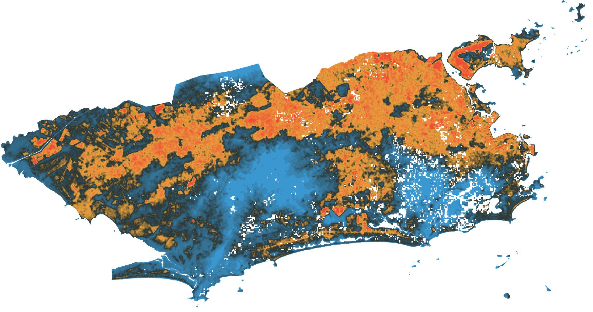
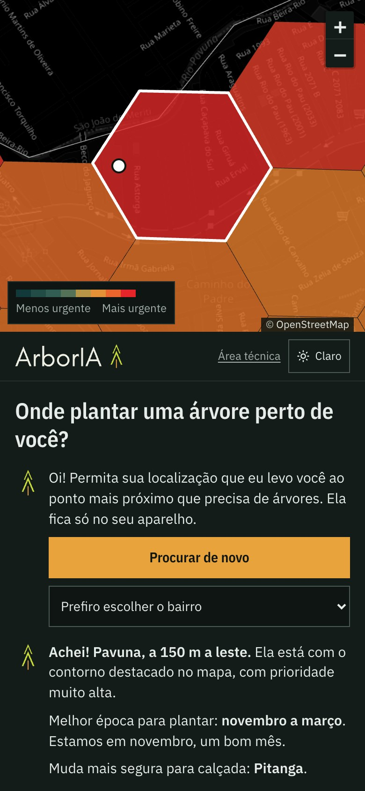

Onde o Rio
planta primeiro
A ArborIA usa imagens de satélite para mostrar, em toda a cidade, onde uma árvore nova faz mais diferença.
Ver o ponto mais perto de mimO calor,
visto de cima
Treze imagens de satélite, de duas épocas quentes, mostram onde a cidade mais esquenta. Elas medem o calor da superfície, como chão e telhados, por volta das 10h. Não é a temperatura do ar.
+6,8 °C Na área mais urgente da cidade, em Cosmos, a superfície fica isso mais quente do que no lugar típico do Rio.

Onde falta
sombra
Um mapa mostra as árvores com 3 metros ou mais. Falta sombra justamente onde a superfície esquenta mais.
4,7% do chão fica sob árvores nas 473 áreas que seguem no topo da lista. Em todas as áreas avaliadas, são 12,5%.

Uma nota
por área
Cada pedaço da cidade, do tamanho de uns 14 campos de futebol, recebe uma nota de 0 a 100. A conta soma calor, falta de árvores, gente morando perto, construções, espaço para plantar e terreno.
7.225 áreas com nota. Testamos 2.000 formas de fazer a conta: 473 áreas ficaram entre as 10% mais urgentes em pelo menos 80% das vezes.

Do mapa
até a calçada
Você libera a localização e vê o lugar mais próximo que precisa de árvore, com a muda indicada, a melhor época e o pedido pronto para o 1746.
Grátis e sem cadastro. A localização não sai do aparelho.

E o seu bairro?
Escolha um bairro e veja o que os dados mostram hoje.
- Carregando os dados
- –
- Posição da área mais urgente do bairro na cidade
- –
- Calor da superfície, comparado ao lugar típico do Rio
- –
- Chão coberto por árvores, no valor típico do bairro
- –
A conta é aberta
Cada nota mostra de onde veio. Quanto cada fator vale é uma escolha nossa, e qualquer pessoa pode mudar esses valores e ver a lista se reorganizar.
| Fator | Pontos | Fonte | Como sabemos |
|---|---|---|---|
| Calor da superfície | 30 | Satélites Landsat 8 e 9 | Medido |
| Falta de árvores | 25 | Mapa de árvores da Meta | Estimado |
| Pessoas morando perto | 20 | IBGE, Censo 2022 | Estimado |
| Área construída | 10 | Mapa ESA WorldCover 2021 | Estimado |
| Espaço para plantar | 10 | WorldCover e OpenStreetMap | Estimado |
| Terreno plano | 5 | Mapa de relevo Copernicus | Estimado |
0,52 °C
Lugares com 10 pontos percentuais a mais de árvores costumam ter a superfície 0,52 °C mais fria, com margem de 0,41 a 0,62. Sem descontar construções e relevo, a diferença pareceria de 1,55 °C. Mostramos o número menor. Isso compara lugares como estão hoje e não prova quanto um plantio vai esfriar.
O que ela não promete
- Não prevê alagamento nem queda de temperatura. O simulador compara situações. Não é previsão.
- A temperatura é a da superfície. Medida por volta das 10h, não é a do ar nem a sensação térmica.
- Nota alta não garante que cabe uma árvore. Cada área tem o tamanho de uns 14 campos de futebol, e só a vistoria confirma o local.
- Plantar em área pública exige a Prefeitura. No Rio, a Fundação Parques e Jardins decide local e espécie.
- Nossa IA ainda não passou em todos os testes. Ao ler 19 mil fotos de rua, ela ficou abaixo da nossa meta de acerto em calçada e meio-fio. O modelo que estima árvores reprovou em um de três testes. Nenhum dos dois entra na nota.
- A muda é só uma sugestão. Segue regras escritas com base na Portaria FPJ 03/2025 e não foi testada na rua.
Metas da ONU que guiam o projeto
A ArborIA se conecta a três Objetivos de Desenvolvimento Sustentável (ODS) da Agenda 2030.
-
ODS 11: Cidades e comunidades sustentáveis
Mostra onde faltam árvores e ajuda a decidir onde plantar primeiro, com a conta aberta para qualquer morador conferir.
-
ODS 13: Ação contra a mudança global do clima
Aponta os lugares que mais esquentam, para prepará-los para um clima mais quente, e explica o problema em linguagem simples.
-
ODS 3: Saúde e bem-estar
Calor forte é um risco à saúde. Por isso a nota dá mais pontos aos lugares onde muita gente mora, para a sombra chegar antes a quem está mais exposto.
Essa é a contribuição que o projeto propõe para o planejamento da cidade. Ainda não medimos o efeito dele sobre essas metas.
Escolha sua porta
Moro no Rio Quero saber onde plantar perto de casa. Trabalho com o tema
Quero ver os mapas, os pontos de cada fator e o método.
Trabalho com o tema
Quero ver os mapas, os pontos de cada fator e o método.